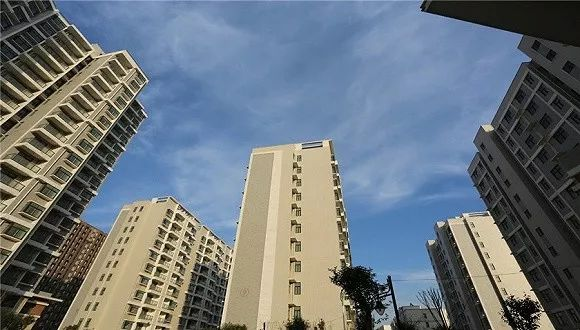

旅游业的“惊魂”15天
原文链接 备份链接 《创新经济战疫指南》，是燃财经在新型肺炎疫情期间推出的特别栏目，关注创新经济企业遇到的新难题、商讨应该采取的新对策，希望能够帮助中小企业一起战胜挑战、把握机会。本文是第6期。查看前5篇请点击《哪些行业正在逆势爆发？》《 …
记者：吴波
“
在无交易情形下，七成经纪公司明确表示现金流撑不过半年。
”
今年初，“新冠”疫情来势汹汹，房地产行业也面临一次大考。此次疫情对于房地产行业具体影响，暂时只能通过数据测算和调查预估一二。
近日，贝壳研究院采用“中值回归法”，并参照“非典”对当年市场的扰动，对2020年房地产市场影响进行预判；同时联合中房经联发起《2020年新型冠状病毒对中国房产经纪影响》的问卷调查，用多个角度还原疫情之下的房产经纪行业。
贝壳研究院根据疫情发展形势三种不同假设做出预判：如果疫情2月底结束，则2020年全国住宅销售面积同比降约4%；如果疫情于3月中结束，则销售同比降幅约8%；如果疫情于6月初结束，则销售同比降幅约15%。
在二手房方面，如果疫情2月底结束，将导致一季度成交面积同比下降16.6%，全年成交面积较2019年下降3.9%；如果疫情于3月中结束，将导致一季度成交面积同比下降23%，全年成交面积较2019年下降9.3%；如果疫情于6月初结束，将导致一季度成交面积同比下降28%，全年成交面积较2019年下降16.3%。
接受中房经联、贝壳研究院采访专家的主流判断，一季度市场交易量将下滑，市场在疫情过后仍将持续低迷。
不过，“非典”期间，疫情的影响主要在3、4、5月。5月初随着疫情拐点出现，降幅收窄，市场开启修复。6月份之后，市场销售环比变动与前两年基本吻合。
贝壳研究院指出，疫情会对市场造成一定影响，但不会改变行业的基本面，房地产依旧是巨量行业，困难只是暂时的。
尽管长期持乐观态势，房地产经纪行业短期内经营压力也不容忽视，需要经营者根据疫情迅速做好风险管理，实施应对之策。
问卷调查显示，房产经纪公司现金流承压，离职率预期增强，现金流短缺，七成经纪公司撑不过半年，八成经纪公司处境艰难。春节假期叠加疫情，导致交易停摆、收入显著减少与门店租金和人工成本的刚性支出的矛盾激化，经纪公司现金流承压，经营困难。
在无交易情形下，七成经纪公司明确表示现金流撑不过半年；而考虑到11%的经纪公司选择不确定，按照其他选项的平均分布，预计近八成经纪公司处境艰难。
受到疫情波及，经纪行业从业者复工难度增大。问卷调查显示，接近九成经纪人开展业务受到明显影响，超六成认为其撑不过6个月；73%经纪人表示由于无法正常开展带看、匹配、撮合，担忧作业难度将增大，加之经纪人普遍为流动人口，67%经纪人表示回岗难度增大，因此超一半经纪人预期收入将显著减少，无交易情形下，约六成经纪人无法坚持半年。
总体来看，行业普遍预期疫情之后修复周期约一个季度以内，但中小经纪公司和疫区从业者更悲观。61%从业者行业预期疫情冲击可在一个季度内消除，但从规模来看，中小品牌主由于经营困难，对未来的预期更悲观，59%的中小经纪公司和店东认为疫情之后修复周期在一个季度以上。
此外，疫情持续时长也是影响行业信心的重要变量，湖北从业者行业信心明显不足，64%疫区从业者认为修复周期在3个月以上，远高于非疫区的38%。
面对现金流吃紧、人员流失加剧的经营困境，房产经纪机构最期望获得租金优惠，其次是弹性薪资政策。
根据问卷调查，75%的房产经纪机构期望获得明确的租金优惠政策；59.7%的经纪机构希望得到与员工可协商的灵活薪资政策支持，按比例或延迟发放，在提供员工一定薪资保障的基础上降低人工成本支出；而54.7%的经纪机构希望得到企业所得税、房产税等优惠。此外，在其他情形中，月供延缓、提供经营贷成为主要诉求。
未经授权 禁止转载

原文链接 备份链接 《创新经济战疫指南》，是燃财经在新型肺炎疫情期间推出的特别栏目，关注创新经济企业遇到的新难题、商讨应该采取的新对策，希望能够帮助中小企业一起战胜挑战、把握机会。本文是第6期。查看前5篇请点击《哪些行业正在逆势爆发？》《 …
原文链接 备份链接 原本打算在春节期间大有作为的餐饮业，被疫情来了一次“精确打击”。在现金流高度紧张的情况下，很多停摆企业仅能维持2-3个月。在一些从业者看来，真正的挑战在复工之后，疫情可能会带来餐饮业的一次洗牌。 记者 | …
原文链接 备份链接 尽管防疫成本暂时可控，销售收入降低使不少企业依然面临现金流短缺的风险。短期内公司将如何应对？ _ 实习生 | 丁宁 记者 | 王晓珊 编辑 | 盛倩玉 沈小山 版式 | 韩佳芸 这个年，石青是在接连不断的电话会议中度 …
原文链接 备份链接 作者 | 安然 编辑 | 康晓 出品｜深网·腾讯小满工作室 欢迎下载腾讯新闻APP，阅读更多优质资讯 _编者按：_跨越疫情经济周期，需要中国全行业上下游携手共度难关，深网推出《共克时艰》系列报道，是为第四篇，一位教育创 …
原文链接 备份链接 图片来源：视觉中国 记者：肖芳 伍洋宇 周伊雪 编辑：文姝琪 “ 大量的创业公司都面临着现金流的压力，维持6个月以上的现金流被认为是企业能够熬过去的关键。 ” 2020年的春节，疫情突如其来，让创业者们猝不及防。 1 …